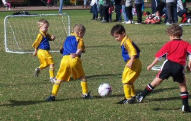
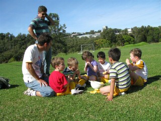
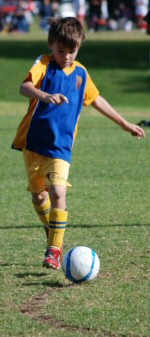
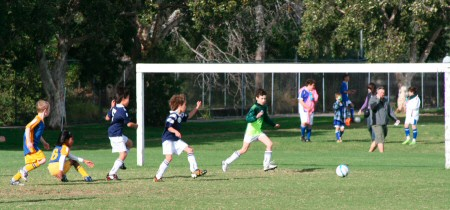

| Match Report - 16 May 2009 |
|
|
|
|
|
|
|
|
|
|

The Purple team showed encouraging signs this week, with a lot more focus on the game
play. The game started with a brilliant goal save by Lucas
- he chased the ball as it was heading to the goal and saved it with only cms left.
Great effort! All of the team were much more focused today on trying to block the
opponent's goals - many successful too. Birthday boy Jayden
showed wonderful improvement today - he was on fire! Jayden
arrived with great enthusiasm to play, followed the ball around and had some great
defensive kicks of the ball. Lukah and
Jasmine were good on defence today, with a member of our
cheersquad, Brian (the dog), racing in to give a hand.
Some mid game sledging from the opposition threatened the joy of the game, but we
overcame it and had a great time. Will &
Cameron were great team players passing the ball. Once
again, the team dance moves after the goal scores were groovin'

Congratulations to the Player of the Week - Jayden.
Post game interview on the sideline with Cameron, 4yrs
(TRexMan) and Lucas, 4yrs (RocketBoy):
What did Coach Marc tell you to do today?
TRexMan: "Pass the ball."
RocketBoy: "Stay on the field and get the ball."
What did the team do well in the game?
TRexMan: "Got goals."
RocketBoy: "Stayed on the field, had some rests and went back on the field."
What was the best thing about the game?
TRexMan: "I got a high five from Coach Marc and he said Ouch."
RocketBoy: "Someone getting the trophy."
What's your tip for next week, Win/Lose?
TRexMan & RocketBoy: "Win!"
- Sally Last (Supermum)
|
|
|
|
|
|
On a morning that was more suited to being curled up in a warm bed than at a windy cold
soccer park, our team were looking sharp and enthusiastic in warm up and with the arrival
of the new playing shirts certainly looked the part and were ready to play.
Running into what could best be described as an icy gale in the first half, the game
started at a good pace with some solid work in the midfield from Jake
and Ben ensuring that our opponents did not get the ball into free
space. As the half wore on and the wind started to take its toll on our players, the game
started to open up and Emma and Dominic
found themselves doing a lot of chasing with our skilful opponents capitalising on the better
of the conditions.
We managed to create a couple of good scoring opportunities in the first half with
Felix in particular getting heavily involved and clearly playing
his best game of the season so far. Erin was instrumental in making
sure that all our restarts from the goal line and half way line put us in an advantageous
position, but unfortunately our opponents were full of running.
Half time had arrived but all was not with many of the experts on the sideline agreeing
that it was at least a 10 to 12 goal 'breeze'! As luck would have it as soon as the second
half commenced, so the wind disappeared.
It was obvious we were playing a pretty talented team but it didn't seem to worry our guys
who really went up a notch and started to hold their own. Dominic
started to create some scoring chances whilst always being there in defence with his
trademark 'sweeping' tackles. Emma was terrific setting up some
nice moves out wide and still chasing everything in sight. Ben
and Jake were always in amongst the thick of the action where
the hard yards are done in midfield and Felix continued to play
out of his skin, relishing any chance to get involved. Erin was
again terrific in finding her team mates with some accurate kicking which earned her the
Player of the Match trophy for this week

All in all, considering the obvious talent of our opponents, our team never gave up and
even started to play a better brand of football in the second half when it would have been
easy to just drop their heads and give up. Coach Chris, whilst still having a bit of work
to do has managed to blend this team together extremely well so far and the signs of more
improvement are very encouraging. It's only early days, but the most important thing of all,
especially at this age, is that all the players are having a lot of fun and are enjoying
each other's company.
Looking forward to next week.
- Paul Bonaventura
|
|
|
| U6 Red C |
North Ryde Red C - North Ryde Red A

|
|
|
|

We passed to each other. I scored a goal. Fletcher played well and the team played
better in the second half.
- Martin Sellar (Player, aged 6)
|
|
|
| U7 Red A |
North Ryde 1 - Ryde Saints United 4

|
|
|
|
Well the guys came back to earth this week with us going down for the 1st time this
season. The Saints came out hard from the 1st whistle, putting in three quick goals
and our boys on the back foot.
Troy, Alex C and Alex W were all working hard in defence, and held out a number of
attacks. Arlen, Aden and Alex G played a lot more in the mid field, trying to drive
some ball forward, but the Saints defence was very strong.
In the 2nd half, after a good chat in the break, our boys got their composure and
played some better soccer. Arlen got our only goal, and the highlight was we were able
to keep the Saints to one goal as well.
Our 'Best Ball Skills' certificate went to Aden with Troy taking out the 'Best Team
Player' certificate. The best all rounder trophy went to Alex W.
Here's hoping this rain breaks and we can get in another great round this week end
- Rob Wylie (Coach)
|
|
|
|
|
|
Wow, what a game! It had everything today. New uniforms, sweat, tears (from the
parents), great defence, great attack, some own goals even blood and finally what
we were all waiting for, a...
GGGGGGGOOOOOOOOOOOOOOOOOAAAAAAAAAAALLLLLLLLLLL !!
Well to start off with it was a wind swept day playing on top of what must have been
a mountain. Let me tell you it was cold enough. Not a problem for the boys. First
thing for the day were the presenting of new uniforms and this alone lifted their
spirits.
Game on. We started strongly but we were playing a very good team. We let some goals
in but the boys were still trying their best and that's what it's all about. We made
a couple of breaks down the side but just couldn't put in the final blow. First half
we came so close about 4 times but only due to brilliant defence by the other team
were we denied. Coach and parents new we were on the edge of a great moment. First
half over and still no score but the coach pulled the boys aside for an encouraging
word and he gave them the magic oranges. They were pumped.
Second half started and we let in some easy goals and again we were denied by
brilliant defence but not for long. Suddenly Jarrod, makes a break up the middle,
he's in the clear, he does the final kick and it slams into the back of the net
The crowd goes wild, the boys are high fiving, almost brings a tear to the eye just
writing this. Still the game is not over. We let in a few more goals but the defence
and commitment from our boys is fantastic. On the line and the opposition is peppering
the goals and we are keeping it out when suddenly a high ball comes in and is stopped
brilliantly by one of our boys with his head. This draws blood but after an encouraging
word from dad and the coach he is fine.
All in all a great game. They are starting to string together passes and everyone
is doing there best and more importantly the goals have started to come our way.
What a game!
Encouragement award for the week went to Alex for getting in the thick of it. Well
done Alex and well done North Ryde.
- David Anderson (Coach)
|
|
|
| U8 White |
|
North Ryde 0 - North Epping Rangers 9
|
|
|
|
Saturday proved to be a tough day at the office for the North Ryde U8 White team. To
start with we were missing Salim who was hit with the flu
and then came out against a North Epping team who had the wind advantage in the first
half and got a lead that we couldn't turn around.
The was no shortage of effort and with a bit more training and team work the first win
of the season is just around the corner. James, at goalie in
the first half, had plenty of work to do with the opposition making most of the attacking
play.
Everyone showed plenty of courage to get back on defence with Zane
leading the way. Hayley and Lioda
were in the thick of it as usual and can more than mix it with the boys
Jack was put into goal for the 2nd half and came up with some
great gorilla saves. Conner, Christian,
Will and Austin ran themselves to a
standstill on defence up against a very good opposition side.
Player of the day was a tough choice this week with everyone putting in a huge effort
but in the end it went to Zane with his fancy footwork and
defensive efforts
See you all next week.
- Lee Crafar (Coach)
|
|
|
|
|
|
What a spirited performance by the U9 Div 1's on Saturday, making the long haul to
Kenthurst all that more worth the while. The game was an action-packed contest from
the word go that saw the momentum of the game shift continuously from one side of the
field to the other, and which left me in my capacity as part-time linesman exhausted
by the end of it all
Pauline started off proceedings with some strategic field placings and rallied the players
with a customary pep talk before sending them out onto the battlefield. The ref blew his
whistle and it was game on, North Ryde and Kenthurst matching each other step for step,
each side finding as many opportunities to control the midfield and run at goal as they
were pushed back and forced to defend their own. Jack worked tirelessly on the right
wing to move the ball upfield, and North Ryde's best opportunity of the first half came
when Tom Maclean put the Kenthurst defense under pressure and gave Charlie the opportunity
get the ball into the nets, denied only fractionally by the refs whistle who deemed that
the ball had gone out of play a split-second before. Close.
Kenthurst had their fair share of goal attacks and Adam's goal-keeping skills were put to
the test on at least three occasions, which he handled admirably with a cool and confident
head to deny Kenthurst a place on the scoreboard. The passing game between Tom Hurst,
David, Patrick and Shannon was commendable, and turned a Kenthurst attack into well-timed
North Ryde counter-attack on many occasions. Young Anthony made some timely tackles in the
midfield to disturb the Kenthurst momentum, and the players always gave a bit more room when
they sensed Harrison charging in with his big right boot.
The score remained nil-all at half time, and given the fast pace the game had taken on so
far it seemed the second half could only belong to the fittest survivors. Field placings
were adjusted and the team went back into action, urged on by no shortage of motivational
encouragement from their admiring fans

Jett used his speed and strength to keep any Kenthurst midfield attacks in check, and Eli
and Shannon, bloodhounds on the ball, were merciless in their determination to take the game
into the danger zone. The fitness and endurance was starting to tell, and even though Jack
was forced to make some great stops in goal, you could sense that the odds were starting
to favour the North Ryde momentum.
David grabbed an opportunity midway in the second half to work his way past a couple of
players and have a crack at goal, which ricochetted off a defender before finding the back
of the net. 1 - 0 to North Ryde. The chances at goal were coming think and fast now, but
hats off to the Kenthurst keeper who was up to the task with some terrific saves. The dry
ball and dry ground - a first for this season - ensured that the players were able to find
both height and range with their kicks. Harrison's penalty kick from the halfway line, for
instance, flew with such speed and force that none of Charlie, Adam, Eli or David were able
to stop it as it sailed over the goal line, perilously close to Kenthurst's right goalpost.
North Ryde's second goal came off Tom Maclean's boot in similar fashion. Playing a defensive
position, we weren't sure whether Tom was having a go at goal or simply trying to put the ball
back amongst his pack of forwards, but it was launched from within his own half and sailed at
a perfect trajectory through the air over all the gazing players and over the Kenthurst
keeper's fingertips into the back of the nets, taking the score to 2 - 0 and effectively
sealing the win
It was another strong team effort from the Div 1's, combined with some terrific ball control
and an ever-improving passing game, not to mention their fitness levels which always see them
going as hard at it in the first minute as they are in the last. You always sense that they
still have a lot left in them, and we look forward to seeing more of it as the season unfolds.
- Mark Howard (Linesman)
|
|
|
|
|
|

A windy day greeted the teams for the local derby between North Ryde and the West Ryde
Rovers. The crosswind ensured anything directed towards the eastern touchline gained
extra momentum and provided anxious moments for the goalkeepers.
The first half started with the Rovers camped in North Ryde's half with Oscar as
goalkeeper extinguishing any attacking raid by their forwards. With the Rovers
employing an offside trap our forwards relied upon their speed in counter attack.

Rhea, Ryan and Hamish all made breaks. An injury to Sam saw him carried from field,
but once he was cleared of any serious injury Sam bravely returned in the 2nd half
to support his team. A close offside call and other forward raids with stray passes
meant the Rovers didn't have it all their own way.
The first half finished 0-0 so it was up to coaches Scott and Allan to plan a way to
end the deadlock. The 2nd half started with North Ryde improving their possession with
running out of defence and employing short passes, which made for some anxious moments.
Thomas S, Matthew and Satya all repelled the Rovers attacks until a pass found its mark
and got Rhea in space. Beating 3 defenders with pace and footwork she slotted the ball
past the goalkeeper... GOAL!
A more desperate Rovers team now replied with breaks of their own including a two-on-one
situation with our goalie Liam managing to force a mistake which saw the final pass go
wide... groans and oohs from the vocal crowd on the western sideline.
Another raid saw an aerial shot on goal just miss the left hand post as our goalkeeper
was left squinting into the sun. The midfield of Peter, Ryan and Thomas O were now extra
defenders maintaining closer marking of the ballplayer preventing any free flowing game
for the Rovers as they pressed for the equaliser.
Finally the ref's whistle blew and the suspense was over. North Ryde had prevailed
in a tight game. Good effort!
- Guy Jones (Relieved Parent)
|
|
|
|
|
|
Was I the only one who got the family packed up in the car and commenced the trek down
the M2 to James Henty, only to realise that for once, we were playing a little closer
to the eastern seaboard? It seemed like all of our Saturdays would be spent traveling
west. What a nice change to be much closer to home.
As usual our energetic team took to the field full of enthusiasm. Lucy
grabbed the keeper's kit for the first half and made some excellent saves and w-kicks.
Julian and Tim were more than solid
at the back and made some great defensive moves that helped keep the scoreline
respectable. Josh helped out well at the back making an
excellent pull-back.
Maggie and Ben were busy up front
and both ran themselves ragged. Christopher and
Saxon were everywhere it seemed, well done guys.
Tom & Massie both made some great
dribbling runs and Benyad was his usual cool calm self,
passing and dribbling well.
Luke took the gloves from Lucy in the second half and kept
goal really well making many courageous saves. A special mention to Player of the Match
Brooke. She was fantastic. Given the amount of running you
did Saturday I'm sure you slept well
Thanks to all the family and friends who came to cheers the team on, your support does
not go unnoticed.
See you all at training guys.
- Tony (Assistant Coach)
|
|
|
|
|
|
The boys were always going to be facing an uphill battle in this game with absence of
two key team members through illness reducing the squad to 10 available players and no
substitutes available from the Under 14 side. However we packed our picnic lunches and
survival gear and headed off to Annangrove with Tim Greer from the under 13 side coming
along to make up the numbers.
Although the team lost 5-nil on the day, they played determinedly for the whole 70
minutes against an opposition who took any opportunity to get in a cheap sly shot,
elbowing, stamping on feet in close marking situations etc, our boys can be proud of
the fact that they did not retaliate in kind
Coach Barry Alchin was pleased with improvements in the area of marking up on players
and the way defenders held their shape catching the opposition in offside positions
on numerous occasions. While the backs particularly LiamT and Leo W did their job
admirably and William Greer once again kept strongly denying several scoring opportunities,
the forwards despite creating scoring chances could not find the back of the opposition net.
The boys trailed only 2-0 at half time but once again the shortage of players and fresh
replacements saw the team tire and concede 3 second half goals including a penalty. Heads
up boys you played strongly and as Barry pointed out there are improvements in key areas
each week. A special thanks to Tim Greer who backed up from the Under 13 game in his first
season of football to help the team out on the day.
- Bill Greer (Manager)
|
|
|
|
|
|
We just blew in from the windy city; the windy city is mighty
pretty. Well it was feeling like a windy Chicago day at Pidding Park. It's
very hard to write the report and hold onto the paper!
The toss would be important today as there was obviously a definite wind advantage.
Browny was under the weather and the only missing face for Nth Ryde. It's quite
funny watching the old boys line up as they seem to have as many players on the
field as off! It was a quiet start; the boys learnt early that short passes would
work a lot better for them. Mark H and Smithy were working hard in the backs, but
unfortunately against the run of play WPH - Cherrybrook Blue snuck in an early goal.
The boys looked dumbfounded; I think it was a case of 'weren't you marking him?'!
Restart and Nth Ryde decided it was time to play, the pressure was applied & a
corner was awarded. Pommie put a nice ball in but the wind played havoc with it.
It didn't amount to anything. Mark VH then put a great ball through but the pushy
WPH - Cherrybrook Blue keeper elbowed Pierre and had him flying out of the way.
The ball was sent downfield & Macca returned the favour to a WPH - Cherrybrook
Blue forward! As with all over 35 games the players still think they're playing
premier league! A yellow card was then issued to a WPH - Cherrybrook Blue player
for an indiscretion and not long after Matt S was taken out badly

Play continued and Firgs had a lovely cross over the goal which the wind almost
helped in. Play moved up and down the field, Pommie had a lovely little bit of
flair up the sideline but was stopped short. Time for some SUPER SUBS! The big
guns were coming on - Ado, where are you? In the meantime WPH - Cherrybrook Blue
snuck in another cheeky goal from some poor marking by Nth Ryde. Scrappy play
continued until Nth Ryde applied the pressure. Mark VH took a throw in to Carl
who placed the ball back to Firgs. From 30 metres out Firgs hit it and the keeper
just touched it with his fingertips but could not save was to be the goal of the
season so far. 2-1 WPH - Cherrybrook Blue. Nth Ryde then had a few more attempts
but to no avail. The boys were starting to pass, call and mark better. The half
time whistle blew to halt any further progress or should I say damage?! Darren
was very vocal about marking and composure at the half time chat. Would the boys
be able to apply what he has asked?
Second Half
Nth Ryde seemed to be playing better football at the start of the second half.
Firgs had been watching his beloved Chelsea play and thought he would take his
chance again from 30 metres out. This time he found the post & the ball rebounded
onto the field. Firgs definitely had his golden boot on today! Nth Ryde then had
to scramble to defend. Col, Ado and Firgs were working hard to not let WPH -
Cherrybrook Blue penetrate the goals again. There was a lot of pushing going on
that saw many Nth Ryde players taking tumbles. Nth Ryde then had a couple of
shots on goal that didn't miss by much. Carl was having a good game up front
and was well supported by Matt S and Mark VH in the midfield. Pommie was as ever
entertaining to say the least! More SUPERSUBS!
Again against the run of play WPH - Cherrybrook Blue scored. The mistakes were
creeping back in again and were costing Nth Ryde dearly. Play was restarted and
Nth Ryde sent a ball in the air which Smithy (who was playing up front from the
backs) headed into the goals! 3-2 WPH - Cherrybrook Blue. Smithy - no case for
you son! Nth Ryde then moved the ball up the field and Pommie had a great run
up the sideline, he got chopped down from behind and received a penalty. Pommie
went right and scored. 3-3. From the kickoff Nth Ryde had to defend quickly,
Agro pulled off an almighty save to keep the scores level. SUPERSUB time again,
time for the hardworking Mark H to have a rest!
Carl then had a shot on goal which the keeper saved & rebounded to Pierre; the
terrier chased the ball down and sent it into the back of the net! 4-3 Nth Ryde.
The boys were playing much better, could they hold on for a win? The boys began
playing their hearts out, everyone had come to the sideline to offer their 2
cents worth, Flock was controlling the halves well - hang on he's not playing
anymore! Full time, woohoo, well done boys, you're climbing the ladder to that
35/2 premiership again!

- Lhan Gannon (Official Observer)
|